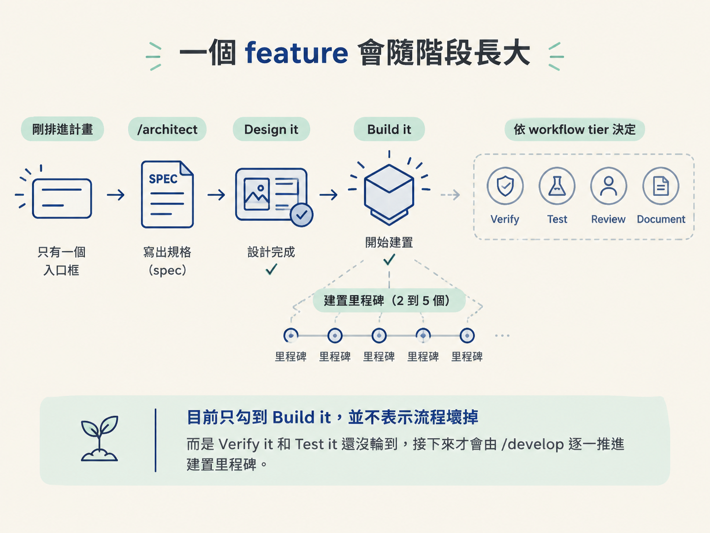
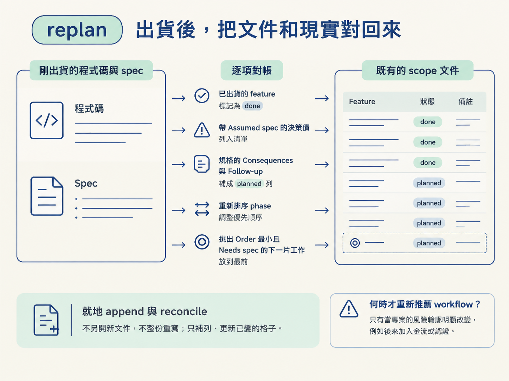

看完這一節，你應該能分辨 done 和 existing，理解為什麼 docs/scope/index.md 上的框不會被 /develop 一次勾完，也能說明 replan 如何對帳並管理 Assumed 決策債。
你照著第一個未打勾的框執行 /develop。功能確實完成了，也能在真 app 上操作；但回到 docs/scope/index.md，卻發現那一列只勾了一半，狀態仍然是 in-progress。
這不是漏更新，也不一定是你漏跑了什麼，而是這套設計刻意留下的狀態。scope 不是寫完就鎖進抽屜的設計圖，而是一張貼在工地牆上的進度表：不同工班在不同階段進場，各自更新自己負責的那一格。
要看懂這張表，關鍵不是「為什麼還沒全勾」，而是先問三件事：這個框代表哪一個階段？誰有權勾它？目前的狀態是已完成、原本就存在，還是仍欠著一個決定？
feature 剛排進計畫時，scope 上通常只有一個入口框。等 /architect 寫出 spec，它會長成 built ready 的形狀：Design it 被勾起來，Build it 底下出現 2 到 5 個里程碑，後面再依 workflow tier 決定是否加入 verify、test、review、document。
接著 /develop 才會逐一推進那些建置里程碑。也就是說，scope 上的框不是「所有尚未完成的事情」，而是「這個 feature 走到下一個階段所需經過的關卡」。目前只勾到 Build it，並不表示流程壞掉，只表示 Verify it 和 Test it 還沒輪到。

這是框不會被一次勾完的根本原因：每個 skill 只負責自己能證明的部分，沒有一個 skill 可以替整條 pipeline 蓋章。
| 框 | 負責推進的人或 skill |
|---|---|
| Design it (spec) | /architect 捕捉 spec 時打勾 |
| Build it 底下的里程碑 | /develop 建置時逐一推進，並補上 code 指標 |
| Verify it | /check verify 在真 app 上證明後打勾 |
| Test it | /test 寫完測試後打勾 |
| Review it / Document it | 只有 GA tier 才會出現的關卡 |
因此，執行完 /develop 後，正常情況是 Build it 那組往前推進，而 Verify it、Test it 仍然空著。這套流程的原則是：工程師決定，AI 建議。你可以選擇跳過某個關卡，但它會被誠實記成 skipped，不會假裝做過。
done 不等於 existing這兩個狀態看起來都像「已經有了」，但來源完全不同。
| 狀態 | 代表什麼 |
|---|---|
done | 這條流程親手建置，而且已經驗證過 |
existing | 在這套流程開始之前，它就已經存在 |
這個區分對 brownfield 專案尤其重要。既有功能可以登錄進 scope，當成後續工作的背景知識，但你不希望 /develop 或 /sync 又回頭修改它。existing 就像一條保護線：它留在表上供對照，但 /develop 和 /sync 永遠不碰。
登錄時也要如實判斷。完整且已出貨的功能才是 existing；只完成一半的功能必須標成 in-progress，讓 /develop 能接手。不能把半成品蓋章成 existing，否則 scope 會失去判斷現況的能力。
有時候你知道某個決定還沒正式定案，卻必須先繼續建置。這時 /develop 會建立一份標記為 Assumed 的 spec 存根，並在 feature 上留下：
assumed decision (spec NNNN)
這行註記不會阻止功能完成，也不會阻止你把 feature 標成 done，因為功能確實已經蓋好。但它會持續提醒你：這裡還欠一個正式決定，直到 /architect 把它追認（ratify）為止。
所以 Assumed 比較像掛在工地門口的欠款單，而不是封鎖施工的路障。可以先做，但不能把欠的決策藏起來。
replan：出貨後，把文件和現實對回來scope 會一直變，問題就變成：怎麼讓文件不要逐漸脫離真實程式碼？答案是 bare /scope，也就是 replan。每次一個 feature 或一個階段出貨後，都應該把它當成例行的對帳節奏。
replan 會讀整份 scope，以及剛出貨的程式碼和 spec，接著在原檔上逐項核對：
done；它會先核對現況，不是隨便蓋章。Assumed spec 的 feature，作為等待追認的決策債。## Consequences 與 ## Follow-up，把建置過程中新冒出的需求補成 planned 列。planned feature，並標明 Needs spec 是 yes 還是 no。它做的是就地對帳，不會另開一份新文件，也不會把整份 scope 重寫。通常只會 append 新列、reconcile 已變的格子。只有在專案的風險輪廓明顯改變時，例如後來加入金流或認證，才會重新推薦 workflow 預設值。

add：只補一個新 feature如果專案進行到一半，你只想到一個新功能，不需要重新規劃整份 scope。執行 /scope <這個 feature>，就是使用 add。
add 會先讀現有 scope 並去重。如果這個 feature 已經以任何狀態存在，就延伸原本那一列，不重複新增。接著它只詢問必要資訊，approach 預設繼承專案預設值，再用發明測試決定 Needs spec?，最後在 At a glance 追加一列和一個 feature 段落。
它的邊界很清楚：只補這個 feature，不重新規劃既有內容。因此它很輕，適合把途中發現的新想法放回計畫，而不會把整張表攪亂。
scope 是跨 session、跨隊友共享的事實，不只是下一次執行 command 的暫存資料。每次整份重寫看起來很乾淨，卻會把重要的歷史一起擦掉。
例如，被移出範圍的功能會留在原地並標成 dropped。你仍然看得見「我們曾經打算做，後來決定不做」。existing 也會持續保留，成為新工作的背景。這些狀態讓 scope 除了描述現在，也留下團隊一路走來的紀錄。
可以把它想成工地進度表，而不是鎖在抽屜裡的藍圖。每個工班進場時，只更新自己負責的那一格，不會把整張表撕掉重畫。某個框還沒打勾，通常只表示它還沒輪到對應的工班，而不是整張表失效。
scope 是活著的文件：feature 會從一個入口框長成多個里程碑，勾選權則分散在
/architect、/develop、/check verify和/test手上，所以不會一次全勾。done代表這條流程建置並驗證過，existing代表流程開始前就已存在，兩者不能互換。Assumedspec 是可以暫時欠著、卻必須持續掛在檯面上的決策債。replan用就地對帳維持文件誠實，add則只負責輕量地補進新 feature。
現在你可以執行一次 /scope，看懂它產生的狀態，並決定 feature 的切法與 depth；出貨後再用 replan 把文件對回現實。接下來，標著 Needs spec: yes 的 feature 就會進入 /architect，把「需要一個決定」變成一份正式 spec。